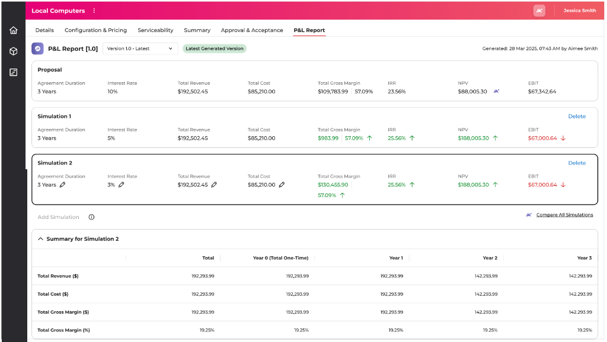
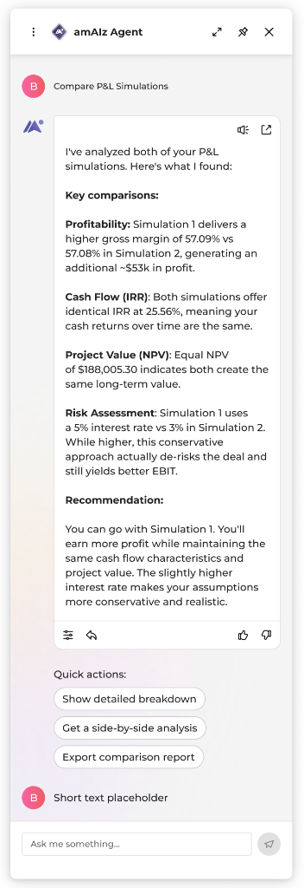
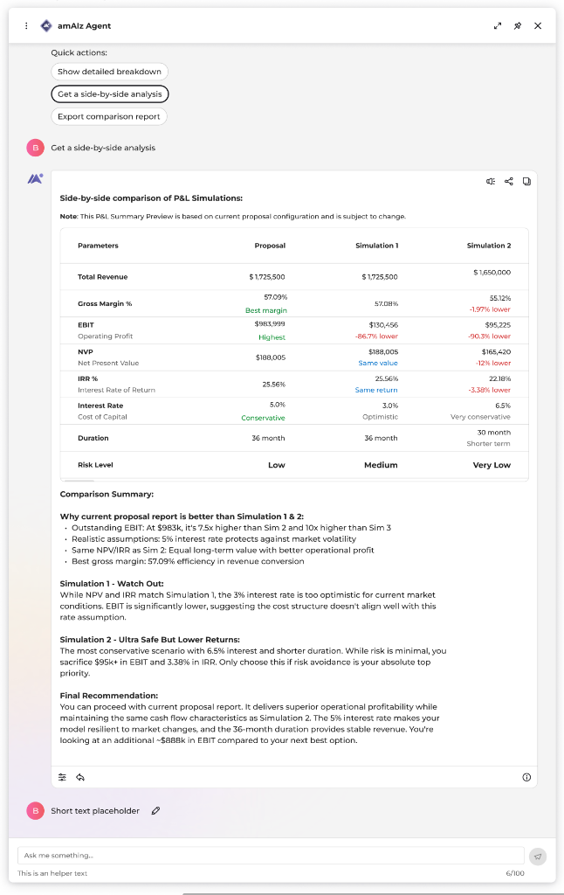
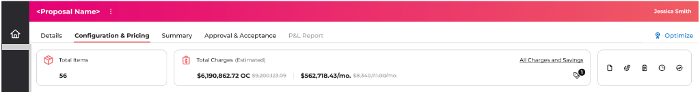
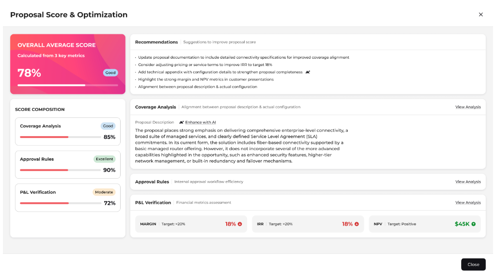
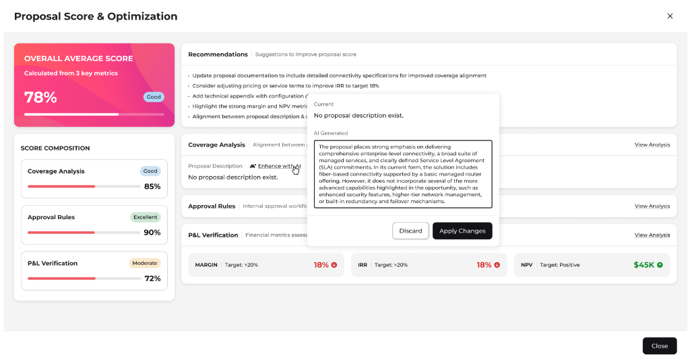

Exploring how AI can support enterprise UX teams across research, design and documentation while keeping designers in control.
The Challenge
Designing for complex systems requires balancing deep technical rules with user constraints.
Simply generating UI layout templates misses the core challenge: alignment with legacy data models and strict business rules.
To design AI responsibly, we must shift from layout generation to agent-assisted workflow mapping where the human designer remains the final gatekeeper.
How can we establish trust and transparent governance when partnering with AI on complex enterprise workflows?
Designer
Design System
Product Docs
Library
Stakeholders
Figma
AI Assistant
Breaking the UX Process into Smaller AI Workflows
Discovery & Research
Research
User Insights
Journey Mapping
Concept & Structure
Information Architecture
Concept Design
Experience Exploration
Detailed Design & Validation
UI Design
Documentation
Validation
Instead of asking one AI assistant to perform an entire design project, we explored how smaller AI-assisted workflows could support different stages of the UX process while designers continued making strategic decisions.
How It Works
1
Design Request
2
Understand Product Context
3
Identify Relevant Design System
4
Retrieve Components & Guidelines
5
Generate Design Suggestions
6
Designer Review & Refinement
AI is not a replacement for designers, but a productivity enabler that requires structured context to be useful.
By placing human decision-making at the center and establishing strict design system governance, we ensure that agent-assisted suggestions are accurate, transparent, and aligned with enterprise trust standards.
Current Progress
Research
✔
Workflow Framework
✔
Knowledge Architecture
✔
Prototype & Experiments
✔
Workflow Implementation
Current
Continuous Learning
Next
This exploration is actively evolving.
The detailed design workflow became the first implementation focus because it provided the quickest opportunity to validate ideas with engineering teams.
As the workflow matures, additional UX activities continue to be explored and refined.
Key Outcomes & Impact
Shifted design workflows from template layout generation to context-driven design exploration.
Reduced time-to-first-draft for complex interfaces using design-system-aware agent prompting.
Maintained human strategic oversight while offloading repetitive pattern rendering tasks.
Key Learnings
AI performs better with structured context.
Smaller AI workflows outperform one large prompt.
Enterprise design requires governance, not just generation.
Human judgment remains essential.
AI should accelerate design—not replace designers.
ResponsibilitiesAI Entry Points, Prompt Systems, Scenario Modelling, Explainable AI Interfaces
Business Context
Enterprise B2B proposals involve balancing pricing, profitability, approvals and technical configurations before submission. Although users had access to detailed commercial data, evaluating multiple proposal scenarios and identifying improvement opportunities remained a manual, time-intensive activity.
We explored how GenAI could become an intelligent decision-support layer—helping sales teams compare commercial options, optimize proposals and improve proposal quality without disrupting existing workflows.
My Contribution
I identified high-value AI opportunities within the enterprise sales workflow and designed contextual AI experiences that support commercial decision making. My work included AI entry points, interaction patterns, conversation flows, prompt suggestions and explainable recommendation experiences integrated directly into existing proposal journeys.
AI CAPABILITY 01
P&L Simulation Comparison & Business Insights
Overview
Enterprise sales teams frequently generate multiple proposal simulations while negotiating pricing, discounts and commercial terms.
Although the platform already supported side-by-side financial comparisons, interpreting dozens of commercial metrics across simulations remained a manual exercise.
Instead of replacing user decisions, the goal was to enable GenAI to explain differences, identify trade-offs and recommend the strongest commercial scenario.
Experience Flow
The diagram below outlines the core human-AI interaction loop, showing how sales operators trigger comparisons and ingest key trade-off metrics.
Entry Points
P&L Summary Report
Simulation Comparison Grid
Prompt Suggestions
Compare simulations
Explain profitability diffs
Highlight commercial risks
AI Response
Recommendation: Scenario B yields 4.2% higher margins with lower risk parameters.
Margin delta+4.2%
IRR threshold18.5%
P&L Summary Report Workspace
The operator initiates deal evaluation within the main P&L Report workspace, analyzing multiple deal simulations (Proposal, Simulation 1, and Simulation 2) side-by-side to assess baseline margins and cash flow metrics.

Conversational Insights & Parameters Grid
Upon launching the assistant, the operator receives an executive summary detailing profitability, IRR, and NPV rationales (left). If requested, the drawer loads a structured parameters grid showing detailed baseline comparison matrices (right).
AI Recommendation & Rationales

Detailed Side-by-Side Matrix

AI Experience Details
1. Contextual Entry Points
AI can be launched directly from proposal reports or the proposal overview, allowing users to compare simulations without leaving their workflow.
2. Guided Prompt Suggestions
Instead of relying on free-form prompting, the assistant surfaces business-focused suggestions such as comparing simulations or highlighting risks.
3. AI Business Insights
The assistant analyzes pricing, margins, IRR, NPV and metrics to generate summaries, financial comparison grids and recommendations with rationales.
Key Outcomes
Reduced Manual Effort
Minimized manual checks and calculations required to compare multiple commercial scenarios side-by-side.
Accelerated Evaluation
Enabled rapid proposal review cycles using clear, AI-synthesized qualitative and quantitative insights.
Explainable Decisions
Avoided opaque recommendations by pairing all AI suggestions with explicit commercial trade-off rationales.
Operator in Control
Maintained user authority—the AI presents suggestions but final decision parameters remain manual.
AI CAPABILITY 02
AI-Powered Proposal Optimization
Overview
Before submitting an enterprise proposal, sales operators must ensure that commercial viability, financial performance and approval complexity are balanced.
Proposal Optimization introduces an AI-powered evaluation layer that analyzes proposal health, highlights weaknesses and recommends improvements before submission.
Experience Flow
The diagrams and screens below showcase how an operator triggers proposal optimization and resolves quality issues.
Optimization Context Flow
The AI engine scans the proposal parameters across coverage configurations, discount VP policies, and margin thresholds to compile the score and surface recommendations.
Trigger
Optimize Proposals
AI Validation Scan
Coverage Check
Approval Compliance
P&L Verification
Recommendations
Overall Health: 84% Score
Actionable AdviceResolve Description
Proposal Workspace Header Context
The operator triggers optimization directly from the proposal workspace header page using the contextual Optimize button, ensuring access to quality metrics without navigating away from the proposal.

Proposal Score & Optimization Console
The detailed optimization console presents the score composition breakdown (Coverage Analysis, Approval Rules, P&L Verification) side-by-side with suggestions and the active proposal description content.

Description Enhancement Popover Workspace
Operators invoke Enhance with AI to transform incomplete proposal descriptions. The modal popover overlay compares current values and AI-generated configurations side-by-side, prompting direct user approval.

Key Outcomes
Reduced Evaluation Overhead
Eliminated manual checks across pricing spreadsheets, compliance rules, and configuration logs.
Consolidated Insights Hub
Unified commercial, financial, and approval insights into a single AI-assisted evaluation panel.
Context-Grounded Copywriting
Enabled AI proposal descriptions grounded in actual configured products rather than hallucinated text.
Grounded Compliance
Improved overall proposal quality and compliance before submission while keeping the sales agent in control.
AI Design Principles
Enterprise decision making requires high-governance interaction designs. We followed four key principles to establish trust:
Contextual
AI appears where commercial decisions are made, avoiding isolated sidebars or generic chatbot interfaces.
Explainable
Recommendations always include reasoning and margin deltas instead of showing opaque progress scores.
Action-Oriented
Every recommendation can be applied with a single click to instantly resolve description or pricing issues.
Human-in-Control
Users always review, edit and approve AI-generated content or pricing overrides before customer submission.
Designing AI for Enterprise Decision Making
Across both explorations, the objective was not to replace human expertise but to augment it. Rather than introducing generic chat interfaces, AI was embedded directly into enterprise workflows—helping users analyze complex commercial data, surface meaningful insights and make informed business decisions within the context of their existing tools.